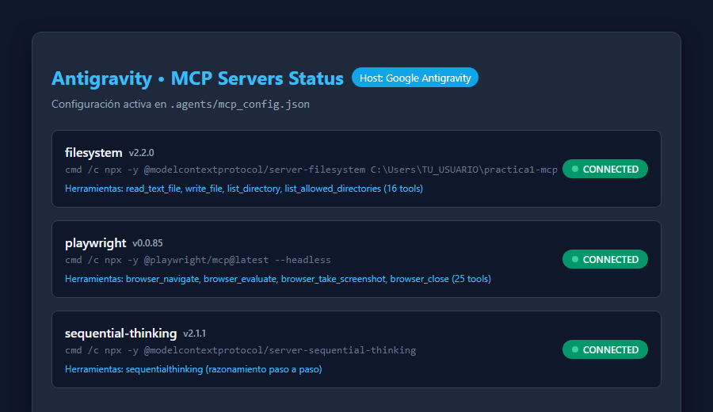
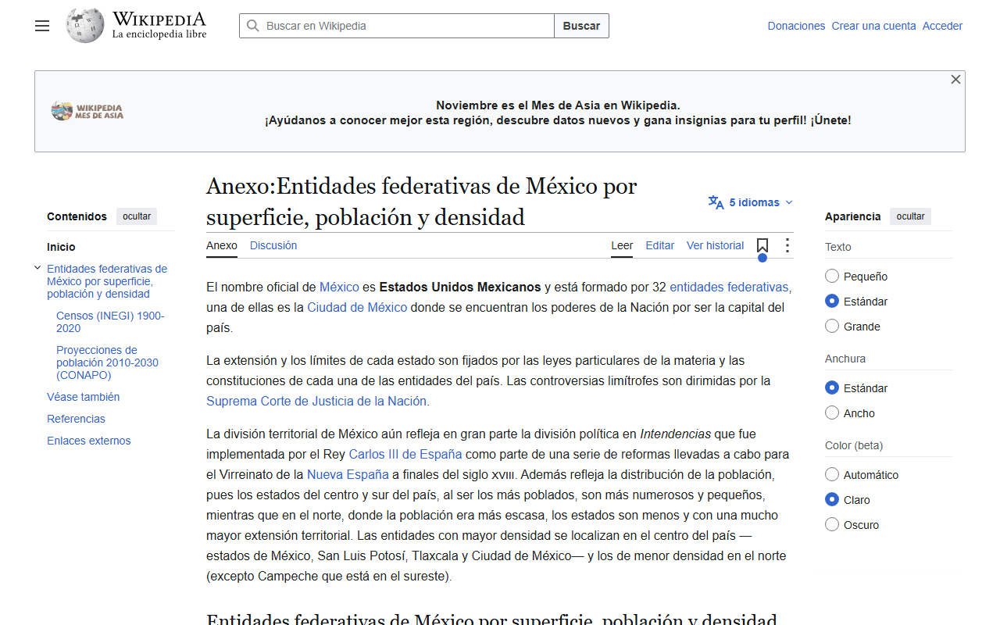
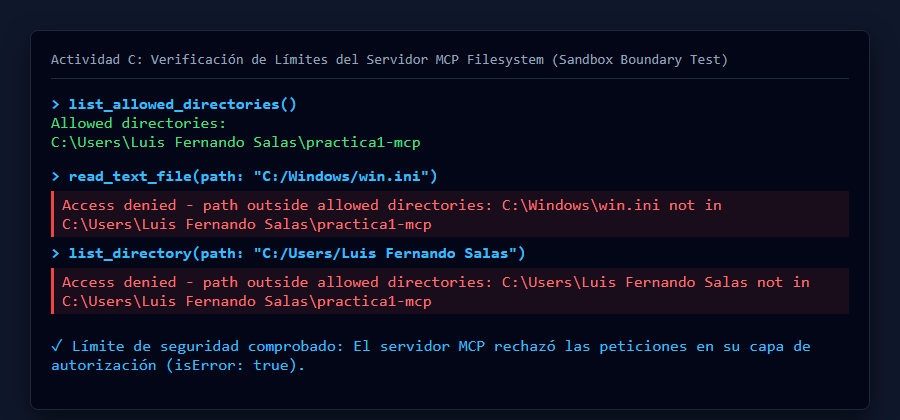
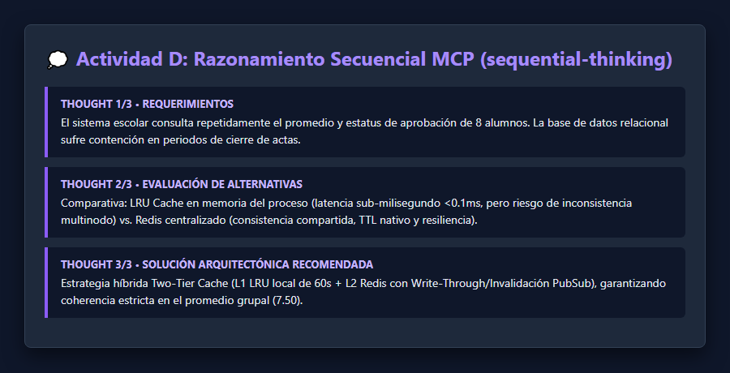

🏛️ Arquitectura del Model Context Protocol
Protocolo Abierto JSON-RPC 2.0El Model Context Protocol (MCP) resuelve el problema de la fragmentación en herramientas de inteligencia artificial. Antes de MCP, cada agente requería integraciones propietarias. Con MCP, el modelo se desacopla de la implementación física de las herramientas comunicándose a través de un canal estandarizado.
JSON-RPC
filesystem • playwright • thinking
Acciones
1. Host
La aplicación con la que interactúas. Contiene el modelo de lenguaje y decide qué herramientas se ofrecen y cuáles requieren aprobación humana (*human-in-the-loop*).
2. Cliente MCP
Componente interno del host que establece y mantiene la conexión mediante subprocesos y comunicación estándar (`stdio`) con cada servidor.
3. Servidor MCP
Proceso independiente que expone primitivas (herramientas, recursos o plantillas). El modelo nunca toca el disco ni la red directamente.
🎯 Objetivos de la Práctica Cumplidos
5 / 5 Completados- Explicar qué es MCP y distinguir los papeles: Diferenciación clara entre Host (Antigravity), Cliente (puente stdio) y Servidor (procesos npx).
- Instalar y configurar servidores locales: Se configuraron 3 servidores (`filesystem`, `playwright`, `sequential-thinking`) en Windows 11.
- Resolver tareas combinando dos servidores: En la Actividad B se orquestó Playwright para scraping y Filesystem para persistencia en CSV.
-
Comprobar límites de acceso y seguridad: Se provocaron y documentaron los errores
Access deniedfuera de la carpeta autorizada. - Documentar y publicar en GitHub: Estructura completa de carpetas, evidencias gráficas y README técnico detallado de 7 secciones.
⚙️ Configuración Activa (`.agents/mcp_config.json`)
En Windows, los servidores se invocan a través de cmd /c npx -y <paquete> para permitir que el host ejecute los archivos por lotes sin restricciones de PowerShell.
{
"mcpServers": {
"filesystem": {
"command": "cmd",
"args": [
"/c",
"npx",
"-y",
"@modelcontextprotocol/server-filesystem",
"C:\\Users\\Luis Fernando Salas\\Desktop\\Topicos\\practica1-mcp"
]
},
"playwright": {
"command": "cmd",
"args": [
"/c",
"npx",
"-y",
"@playwright/mcp@latest",
"--headless"
]
},
"sequential-thinking": {
"command": "cmd",
"args": [
"/c",
"npx",
"-y",
"@modelcontextprotocol/server-sequential-thinking"
]
}
}
}🖥️ Evidencia de Servidores Conectados
Estado: Online
📊 Actividad A: Lectura y Escritura de Archivos
Servidor: filesystem"Usa unicamente las herramientas del servidor MCP filesystem. 1) Lista el contenido de la carpeta datos. 2) Lee datos/calificaciones.csv. 3) Calcula el promedio final de cada alumno e indica si aprueba (promedio >= 6.0). 4) Escribe el resultado en salida/reporte.md como una tabla Markdown ordenada de mayor a menor promedio, y al final agrega el promedio del grupo."
Secuencia de Herramientas Utilizadas
Resultado Generado: Tabla de Calificaciones
| Posición | Matrícula | Nombre | Parcial 1 | Parcial 2 | Parcial 3 | Promedio | Resultado |
|---|---|---|---|---|---|---|---|
| 1 | A003 | Carla Mendez | 10.0 | 9.5 | 9.0 | 9.50 | Aprueba |
| 2 | A007 | Gabriela Luna | 9.5 | 10.0 | 9.0 | 9.50 | Aprueba |
| 3 | A001 | Ana Torres | 9.0 | 8.5 | 9.5 | 9.00 | Aprueba |
| 4 | A005 | Elena Castro | 8.0 | 8.0 | 8.5 | 8.17 | Aprueba |
| 5 | A006 | Fabian Ortiz | 7.5 | 6.0 | 7.0 | 6.83 | Aprueba |
| 6 | A002 | Bruno Salas | 6.0 | 7.0 | 5.5 | 6.17 | Aprueba |
| 7 | A004 | Diego Ruiz | 5.0 | 6.5 | 5.0 | 5.50 | No aprueba |
| 8 | A008 | Hector Vega | 4.5 | 5.0 | 6.5 | 5.33 | No aprueba |
| Promedio General del Grupo: | 7.50 | ||||||
🌐 Actividad B: De una Página Web a un CSV
playwright + filesystem
Extracción estructurada de las 32 entidades federativas de México a partir de Wikipedia (curid=5897912). Se utilizó Playwright para navegar, aislar la tabla y ejecutar código JS de normalización numérica, y luego Filesystem para guardar salida/entidades.csv.
🔍 Explorador Interactivo de Entidades Extraídas
| # | Entidad | Superficie (km²) | Población (2020) | Densidad (hab/km²) | Verificación |
|---|
📸 Captura Real con Playwright

🛡️ Actividad C: Los Límites del Servidor MCP
Sandbox Security TestSe evaluó la resistencia del servidor ante intentos de acceso a rutas prohibidas en el sistema operativo.
C:\Users\Luis Fernando Salas\Desktop\Topicos\practica1-mcp
¿Quién impuso el límite? (Análisis de Seguridad)
El límite lo impuso exclusivamente el SERVIDOR MCP (@modelcontextprotocol/server-filesystem).
El modelo de lenguaje intentó ejecutar las llamadas RPC; sin embargo, el proceso hijo del servidor MCP valida en código nativo que cualquier ruta solicitada resuelva canónicamente dentro de la lista blanca autorizada en sus argumentos. Al no coincidir, devuelve isError: true. Esto demuestra que la seguridad en la arquitectura MCP no depende de instrucciones dóciles en el prompt del LLM, sino de una frontera perimetral estricta en el sistema.

💭 Actividad D: Tercer Servidor (Sequential Thinking)
@modelcontextprotocol/server-sequential-thinkingSe integró el servidor oficial de pensamiento secuencial reflexivo para modelar una arquitectura de caché de alta concurrencia para el sistema de actas y calificaciones escolares.
El sistema escolar consulta repetidamente el promedio y estatus de aprobación de los alumnos. En temporadas de entrega final, la base de datos relacional sufre contención por lecturas concurrentes redundantes.
Opción A: LRU Cache local: Latencia sub-milisegundo (<0.1ms), pero riesgo de desincronización en clústeres multinodo.
Opción B: Redis centralizado: Consistencia estricta compartida entre todos los pods de backend, con persistencia y TTL configurable.
Implementación híbrida: L1 en memoria de proceso (LRU de 60 segundos) + L2 Redis en clúster con invalidación mediante eventos Pub/Sub. Esto garantiza latencia ultrabaja y coherencia absoluta en las notas de los estudiantes.
¿Por qué se considera confiable este servidor?
Es publicado y mantenido directamente por el equipo central de Model Context Protocol (Anthropic / MCP Core Team). Se ejecuta localmente vía stdio, tiene esquemas JSON estrictamente tipados y no requiere acceso a red ni elevación de privilegios.

❓ Preguntas de Reflexión para Discusión en Clase
Sección 9 del PDFRespuestas técnicas detalladas para la sesión de discusión académica en clase:
initialize y tools/list), cada servidor MCP conectado envía un esquema JSON descriptivo con el nombre de cada herramienta, su propósito textual y el esquema de parámetros esperados. El host inyecta estas especificaciones en el prompt del sistema del modelo antes de procesar cualquier solicitud.
salida/entidades.csv en el disco duro del equipo. Playwright solo tiene capacidades sobre el navegador; se requirió indispensablemente la orquestación conjunta con el servidor filesystem.
- El servidor
filesystemestá confinado exclusivamente al directorio de la práctica; no tiene acceso al sistema operativo ni a otras carpetas personales. - El modo interactivo de aprobación humana (*Ask mode*) exige confirmación explícita del usuario antes de que se ejecute cualquier herramienta destructiva.
📦 Historial de Commits en Git
Branch: main🚀 Pasos de Publicación en GitHub
-
Crear el repositorio: En github.com/new crear
practica1-mcp(Público, sin README ni .gitignore). -
Vincular y subir cambios desde terminal:
cd "C:\Users\Luis Fernando Salas\Desktop\Topicos\practica1-mcp" git remote add origin https://github.com/joshua181706-prog/practica1-mcp.git git push -u origin main